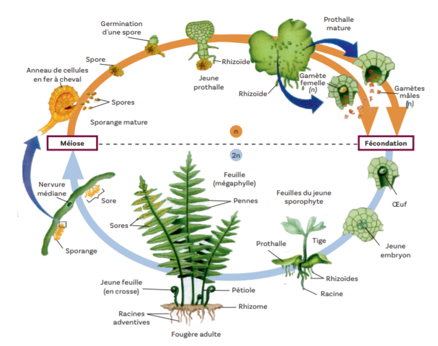
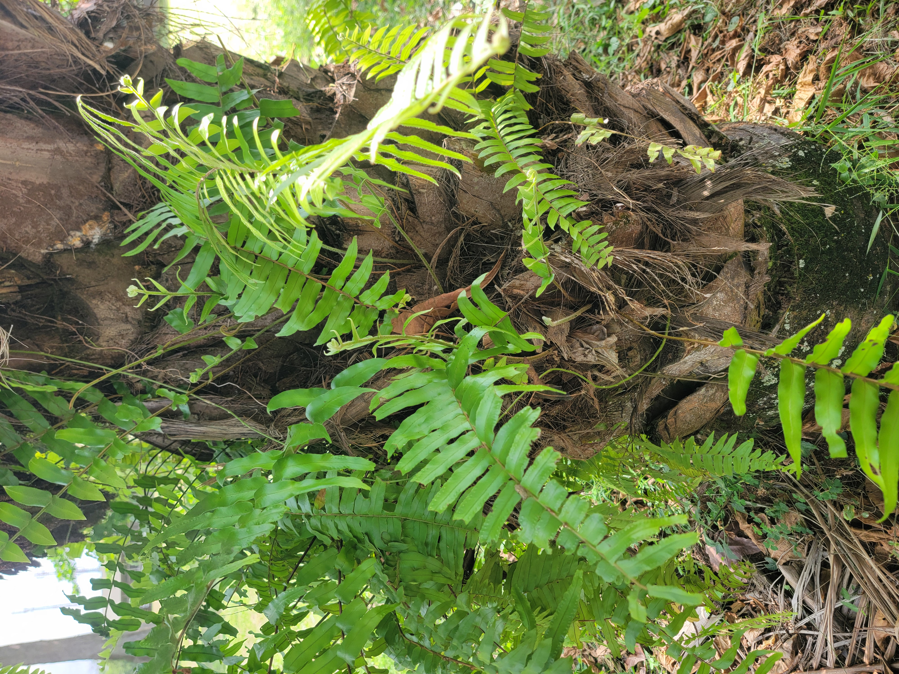

Les fougères (ptéridophytes), sont un groupe de plantes vascularisées, apparues il y a environ 430 millions d’années. Dotées de vraies racines et de bois (lignine), ils ont joués un rôle important dans la colonisation des continents, avant l’apparition des plantes à fleurs. En effet, leur système vasculaire et racinaire les permettent de puiser de l’eau et de faire circuler la sève

CYCLE DE VIE DU FOUGÈRES
source: jardindefrance.org

Nephrolepis biserrata">Une fougère de l’espèce bisarrata (Nephrolepis biserrata) qui pousse sur les palmiers et les bas-fonds.
Lieu d’observation : INPHB-centre
latitude: 6,882967
longitude: -5,229051
précision de la mesure:30m